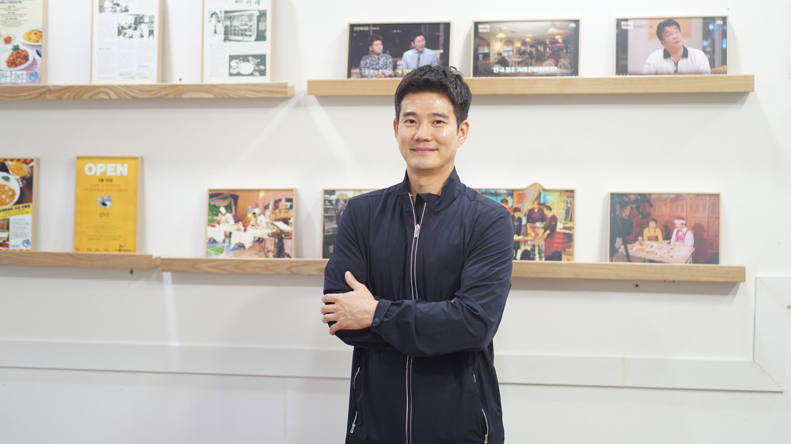
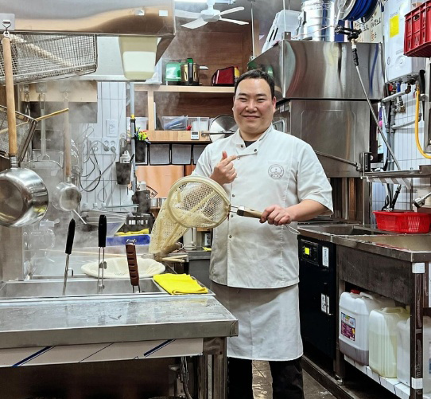

CEO
김민찬
그룹 대표이사
개인 장사부터 프랜차이즈 본사 운영까지, 15년 경력의 프랜차이즈 전문가.
우동키노야의 표준화된 운영 시스템은 아래 영역을 담당하는 본사 조직, 그리고 이들이 지켜온 신념과 경쟁력이 함께 만들어갑니다.
5년, 10년 지속 가능한 브랜드를 만들기 위해 각 분야의 전문가들이 함께합니다.
재방문과 한결같은 품질 유지, 오래갈 수 있는 점포를 위한 상권 보호, 초보 사장님들의 든든한 길라잡이, 트렌드에 뒤처지지 않는 R&D와 매출을 위한 마케팅까지 함께합니다.
사장님은 장사에만 집중해 주세요.
CEO
그룹 대표이사
개인 장사부터 프랜차이즈 본사 운영까지, 15년 경력의 프랜차이즈 전문가.

R&D
구리본점 대표 겸 R&D 본부장
일본 현지 일식요리와 W호텔 일식 파트 경력을 합해 25년의 경력을 가진 요리연구가.
FRANCHISE
가맹본부장
창업상권 분석지도사 1급을 보유한 15년 경력의 세일즈 전문가.
OPERATIONS
운영본부장
파인레스토랑 출신으로 프랜차이즈 운영관리 10년 경력을 가진 슈퍼바이저.
LOCATION
상권분석 전문가
대기업 리테일 점포개발·상권분석가 출신으로 전국 상권을 분석하는 전문가.
MARKETING
마케팅 전문가
다수 브랜드의 마케팅을 실행해 온 10년 경력의 마케터.
인물 소개·직책·경력은 기존 우동키노야 사람들 소개의 공개 내용을 기준으로 정리했습니다.
면 배합과 숙성 공정을 연구하고 표준화하는 역할을 담당합니다. 13개월의 연구 끝에 현재의 48시간 숙성 공정을 확정했습니다.
출점 후보지의 상권을 분석하고, 상권보호 정책에 따라 입지를 검토하는 역할을 담당합니다.
오픈 이후 매장을 정기적으로 점검하고, 품질관리·원가관리를 함께 지원하는 역할을 담당합니다.
트렌드에 맞는 신메뉴 개발과 매출 증대를 위한 마케팅을 담당합니다.